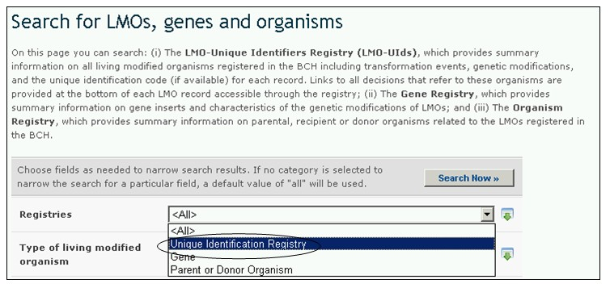

Le Registre d’Identification Unique fournit des informations sommaires pour toutes les entrées d’OVM, y compris l’événement de transformation, de modification génétique et le code d’identification unique (s’il est disponible) pour chaque enregistrement. Les enregistrements fournissent des liens à toutes les décisions et rapports d’évaluation des risques qui font référence à ces organismes.
Le Portail Central du CEPRB utilise un système d’identification unique pour des organismes vivants modifiés afin de faciliter la recherche et la récupération d’information. Actuellement, le seul système d’identification unique existant utilisé au niveau international est l’identifiant unique pour les plantes transgéniques de l’OCDE.
L’ Identifiant Unique de l’OCDE est un code alphanumérique simple donné à chaque plante vivante modifiée qui est approuvée à des fins commerciaux, y compris destinée à être utilisée directement pour l’alimentation humaine ou animale. Ce code est similaire aux codes ISBN utilisés pour identifier des livres. Le système de dénomination de l’OCDE a été conçu de sorte que les promoteurs d’une nouvelle plante transgénique puissent générer un identifiant et l’inclure aux dossiers qu’ils transmettent aux autorités nationales durant le processus d’évaluation de la sécurité. Une fois approuvé, les autorités nationales transmettent l’identifiant unique au Secrétariat de l’OCDE pour qu’il soit ajouté à la base de données des produits de l’OCDE, d’où l’information est partagée automatiquement avec le Centre d’échange pour la prévention des risques biotechnologiques.
L’identifiant unique est un code à neuf chiffres, formé par trois éléments séparés par des tirets (-). Ces éléments sont les suivants :
- 2 ou 3 chiffres alphanumériques pour désigner le demandeur ;
- 5 ou 6 chiffres alphanumériques pour désigner l’événement de transformation ;
- 1 chiffre numérique de vérification (son but est de réduire les erreurs assurant l’intégrité du code alphanumérique).

Figure 42
Il y a deux approches possibles pour des produits crées avec plus d’un événement de transformation (souvent dénommé des événements de transformation « empilés »), où ces événements de transformation ont été préalablement approuvés pour être commercialisés. Un demandeur peut choisir de générer un identifiant unique nouveau pour ces produits, ou choisir d’utiliser une combinaison d’identifiant uniques des produits approuvés préalablement pour être commercialisés.
Le registre d’identification unique contient une seule entrée pour chaque organisme unique ou événement de transformation, et il comprend des informations détaillées sur l’organisme. Le registre présente cette information résumée dans un format de table, où chaque enregistrement peut être sélectionné pour obtenir plus de renseignements.
Les enregistrements dans le registre des OVMs fournit l’information suivante :
1. Information de contact pour le promoteur, la compagnie ou le demandeur ;
2. Le nom et l’identité de l’OVM (nom commercial) ;
3. L’identification unique (quand c’est disponible);
4. Information sur les OVMs apparentés ;
5. Information sur l’organisme récepteur ou parent (y compris le nom ou état taxonomique, le(s) nom(s) Commun(s) et le lieu de collecte ou d’acquisition) ;
6. Information sur l’OVM (y compris l’événement de transformation, les Techniques utilisées pour la modification, les Gènes insérés, le(s) Organisme(s) donneur(s), le lieu de collecte ou d’acquisition de l’organisme(s) Donneur(s), les Traits présentés ou modifiés et la Description de la modification des gènes) ;
7. Information sur l’état Commercial (tel que (i) Utilisation autorisée (dans au moins un pays), (ii) Interrompu par le promoteur ou (iii) Jamais commercialisé et comprenant la Source de l’information relative à son état commercial) ; et
8. Toute autre information pertinente et des références.
Trois onglets dans la partie supérieure de chaque enregistrement d’OVM fournissent des liens vers :
1. l’information générale sur l’OVM ;
2. les décisions des Pays sur l’OVM ; et
3. les évaluations des risques

Figure 43